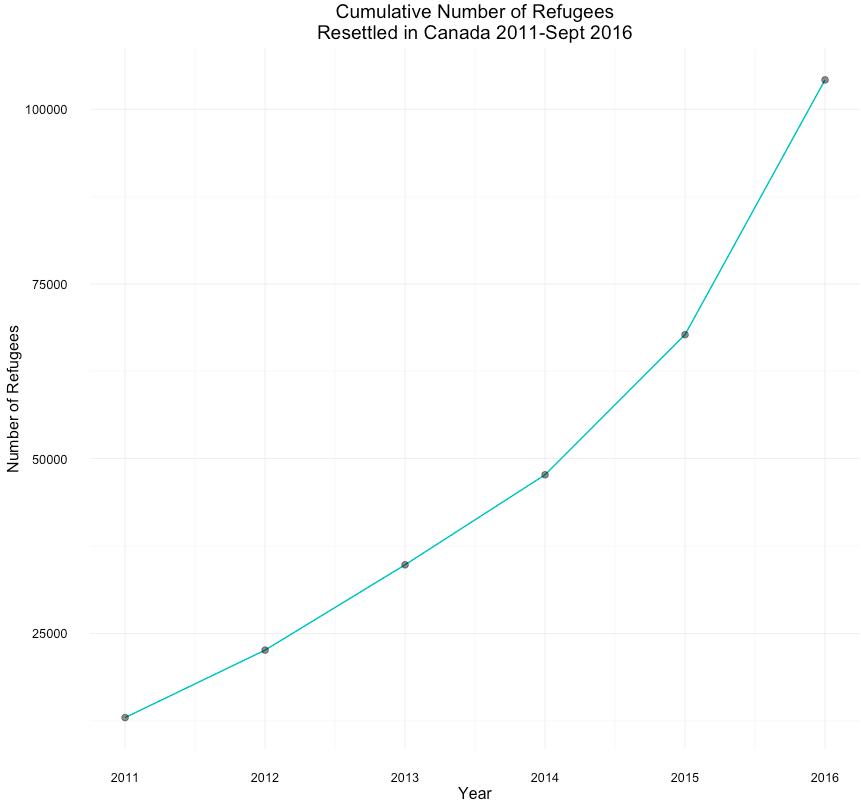
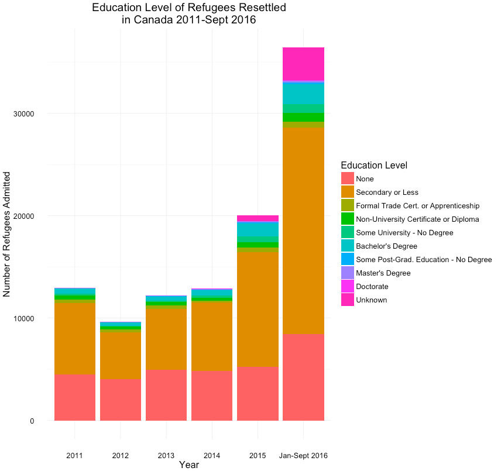
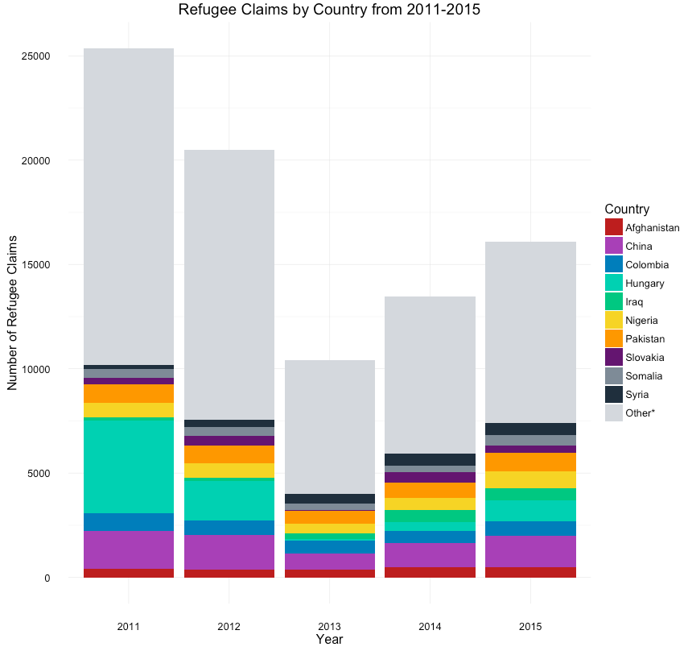
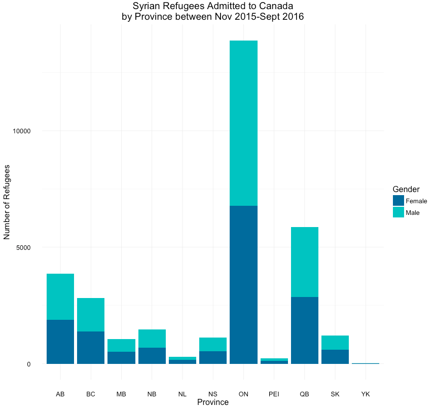
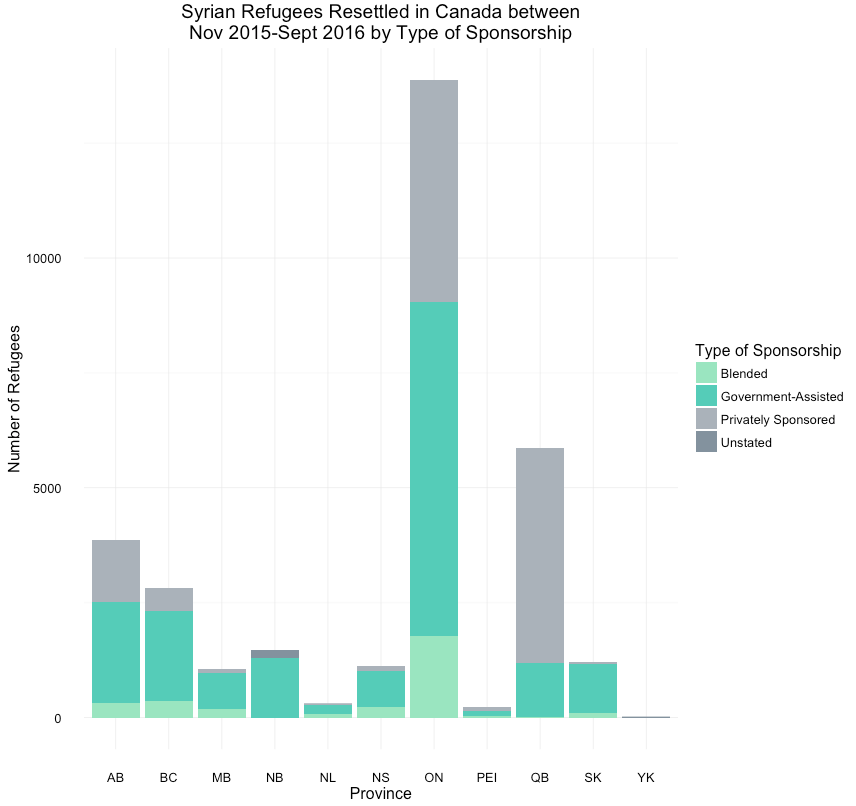

Below are graphs that show different statistics about resettled refugee and refugee claimants using data from Government of Canada Open Data

This graph shows the cumulative number of Government Resettled refugees in Canada between 2011 and September 2016

This shows the level of education of the Government Resettled refugees in Canada. Note that this is for refugees of all ages (children included), hence why there are so many with low education.

This chart shows total number of refugee claimants in Canada each year from 2011-2015 by country. The top 10 countries are coloured, and the rest are grouped together in Other.

As can be seen by this graph of Syrian refugees who entered Canada between November 2015 and September 2016, there is a fairly equal number of male and females.
